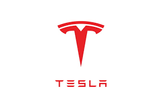

의료 분야
AI 기술은 질병 진단, 치료 계획 개발, 환자 모니터링 시스템 등 다양한 의료 분야에 활용되고 있다.
예를 들어, AI는 의료 이미지를 분석하여 질병을 더 빠르고 정확하게 진단할 수 있게 해준다.
대표적인 예시로는 IBM의 Watson Health가 있다. Watson Health는 방대한 양의 의료 데이터를 분석하여 진단 지원, 치료 계획 수립, 환자 관리 등에 이용된다.
특정 환자의 의료 기록, 유전자 정보, 임상 연구 데이터를 분석하여, 맞춤형 치료를 제안할 수 있다.
자동차 산업

자율 주행 자동차 개발은 AI의 또 다른 주요 응용 분야이다.
AI는 차량이 스스로 주변 환경을 인식하고, 적절한 결정을 내릴 수 있도록 도울 수 있다.
Tesla의 자율 주행 차량은 AI를 활용하여 주변 환경을 인식하고, 이를 바탕으로 차량을 자동으로 운행한다.
실시간 데이터 분석을 통해 교통 상황, 장애물 등을 인식하고 최적의 경로를 선택한다.
자율 주행 차량을 통해 운전자의 피로소 감소나 교통 사고율 감소와 같은 여러 이점을 얻을 수 있다.
금융 서비스
AI는 금융 분석, 위험 관리, 고객 서비스 개선 등 금융 서비스 분야에서 폭넓게 활용된다.
예를 들어, AI는 대규모 데이터 분석을 통해 금융 사기를 예방하는 데 도움을 준다.
AI를 이용한 금융 서비스의 사럐로 자동화된 투자 조언 서비스가 있다. 로보 어드바이저는 사용자의 투자 목표, 위험 선호도 등을 분석하여 자동으로
투자 포트폴리오를 구성하고 관리한다. 예를 들어, Betterment와 같은 회사는 고객의 투자 목표에 맞춰 최적화된 투자 전략을 제공한다. 저렴한 비용으로
개인 맞춤형 투자 관리 서비스를 받을 수 있다는 측면에서 효율적으로 이용될 수 있다.
제조업
AI는 생산 과정의 최적화, 품질 관리, 재고 관리 등 제조업의 다양한 측면에서 응용된다.
AI를 활용한 예측 유지보수는 기계의 고장을 미리 예방하여 생산성을 향상시킨다.
GE의 Predix는 산업용 인터넷 플랫폼으로, 제조 설비에서 발생하는 데이터를 수집하여 분석함으로써 설비의 상태를 모니터링하고,
예측 유지보수를 가능하게 한다. 이를 통해 생산성을 높이고, 유지보수 비용을 절감할 수 있다.
소매업
AI는 고객의 구매 패턴을 분석하고, 개인화된 쇼핑 경험을 제공하며, 재고 관리를 최적화하는 등 소매업에서 중요한 역할을 한다.
AI 챗봇은 고객 서비스를 개선하는 데에도 사용된다.
Amazon Go는 AI와 기계 학습 기술을 활용한 무인 매장이다. 고객이 매장에 들어와 필요한 상품을 가져가면, 첨단 센서와 알고리즘을 통해 고객의 장바구니에 담긴
상품을 자동으로 인식하고 계산 과정 없이 고객의 계정으로 자동 청구된다. 이를 통해 계산 대기 시간 없이 편리한 쇼핑 경험을 제공한다.
이처럼 AI는 각 산업 분야에서 특정 문제를 해결하고, 효율성을 증진시키며, 새로운 사용자 경험을 제공하는 데 있어 중요한 역할을 하고 있다.